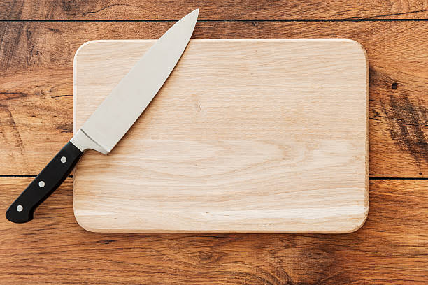
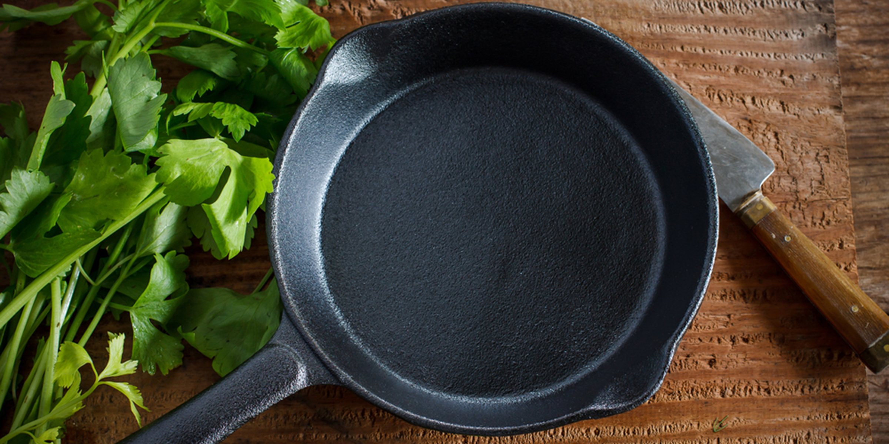

1. Dull knives are safer because they are less likely to cut you while chopping ingredients. if for some reason
your knife is falling to the ground make sure to always catch it by the blade to avoid it scratching the floors
and getting dirty

2. when using an cast iron skillet some ingredients you should use to first season the pan are a mix of onions,
vinegar, tomatoes and lemons.

3. Fruit loops are